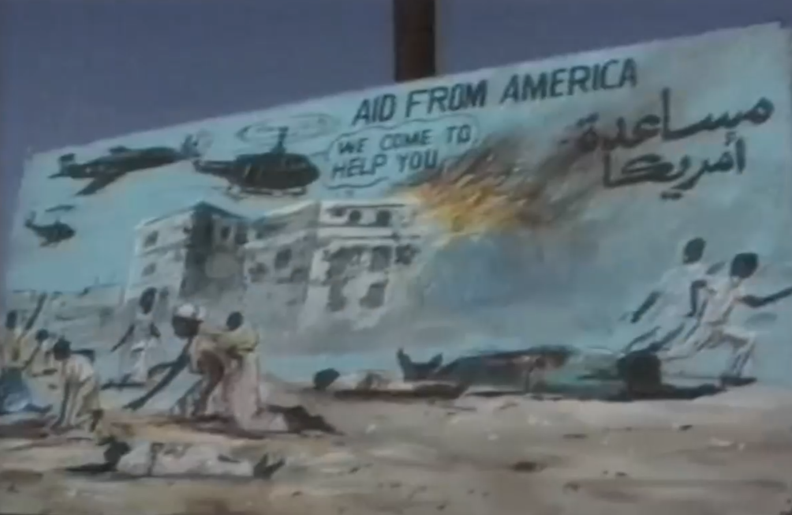

The Somali Civil War
The war that brought Somalia's downfall
Many people believe that war is black and white, that one side is good and the other is evil. That is almost never completely the case, as with this war
The bones of the Isaaq clan in the center of Hargeisa, Somalia, after it was bombed by Siad Barre and the government

Propaganda from the allied rebel forces (a group of factions and clans that bounded together against Barre, defeating him) against the US government intervening and bringing aid to the Somali people during the time of instability after Barre's defeat
No one side is truly innocent. Both sides have also been known to be oppressing citizen's rights, fighting in public spaces and commiting war crimes
US soliders preparing to fight the rebel forces in the middle of Mogadishu, Somalia's capital town in 1993
Knowing this, how can some people see others for their blood and not their character, when it's been proven that anybody can do morally questionable deeds regardless of heritage? Today, due to all of these events Somalia is having trouble dealing with a drought, and due to their being no effective central government there is not nearly enough aid being provided to the now impoverished civilians. The actions of both the rebel forces and Barre's government caused this unfortunate outcome, resulting in the crisis of today
Somalia today, facing yet another crisis, a drought
You can donate to Somalia's needy families at the UNHCR's donate page